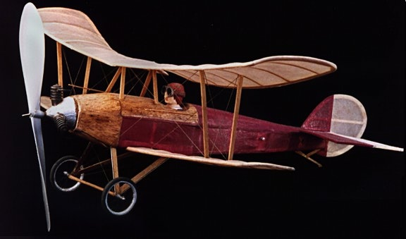
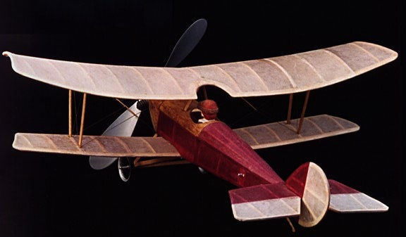

|
The Bellanca Tractor Biplane is from a pull out plan in the first model airplane magazine I ever saw, a copy of Model Builder from October 1972. My original try at this model was a bit heavy and warped, perhaps due to the Monokote I used to cover it. I don't remember if it ever flew. This is the second version I have built, and is 7-8 years old. Heavily doped domestic tissue was used throughout. I know the wings and stab are terribly warped, but to see it in the air you would never know. It flies on the proverbial rails. Best times to date are 45 seconds outdoors, 35 indoors. Wt is 16.6 gms without the rubber motor.
The success of this model has inspired a larger version for micro radio control gear. |

Copyright 1997-2015, Thayer Syme. All rights reserved